a. Loại lò xo
Lò xo xoắn có cấu tạo đơn giản, dễ chế tạo, có trọng lượng nhỏ hơn nhiều so với lá nhíp. Nhược điểm của lò xo xoắn là chỉ chịu được lực thẳng đứng, không chịu được lực tác dụng thep phương ngang, lực dọc. Vì vậy, lò xo xoắn dùng trên hệ thống treo ô tô chỉ làm được nhiệm vụ bộ phận đàn hồi và hệ thống treo phải có bộ phận dẫn hướng riêng biệt.
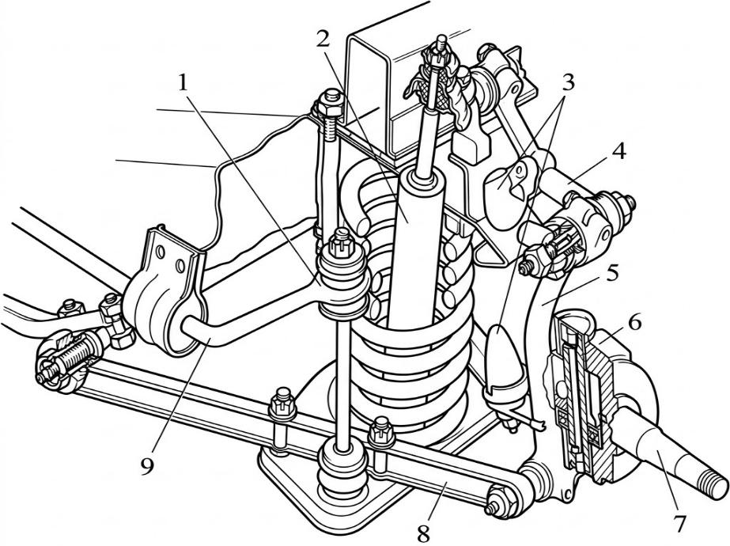
Hình 11.21. Hệ thống treo có bộ phận đàn hồi là lò xo xoắn
1- Lò xo xoắn; 2- Giảm chấn; 3- Ụ hạn chế; 4- Đòn trên; 5- Đòn đứng; 6- Trụ đứng; 7- Cam quay; 8- Đòn dưới; 9- Thanh cân bằng.
Hình 11.21 thể hiện một hệ thống treo sử dụng lò xo xoắn làm bộ phận đàn hồi. Đây là hệ thống treo độc lập lắp cho bánh xe dẫn hướng (bánh xe trước). Lò xo 1 làm nhiệm vụ bộ phận đàn hồi. Giảm chấn 2 được lắp trong lòng lò xo. Các thanh 4, 5, 8 là các đòn của bộ phận dẫn hướng.
Bộ phận đàn hồi kim loại ở các hệ thống treo độc lập nói chung đều là lò xo xoắn (hình 11.14, 11.15, 11.16, 11.17, 11.18, 11.19).
Lò xo xoắn còn được sử dụng làm bộ phận đàn hồi trên hệ thống treo phụ thuộc (hình 11.2, 11.3, 11.4, 11.5).
Bộ phận đàn hồi là lò xo xoắn cũng có đường đặc tính tuyến tính như nhíp lá do đó nếu giảm độ cứng để tăng êm dịu thì biến dạng sẽ tăng và ảnh hưởng đến không gian treo của xe.
b. Loại thanh xoắn
Thanh xoắn có dạng tiết diện đơn tròn hay tiết diện ghép hình lục lăng hình 11.22. Hai đầu thanh xoắn có tiết diện lục giác hoặc then nhằm liên kết với các phần của HTT. Thanh xoắn được chế tạo từ thép silic (thép hợp kim độ đàn hồi cao), có kích thước và khối lượng nhỏ, dễ dàng bố trí trong không gian dưới sàn xe.
Để tăng khả năng chịu tải hoặc thu nhỏ kích thước, thanh xoắn được chế tạo với ứng suất dư khi nhiệt luyện, ứng suất dư được hình thành theo ngược chiều chịu tải. Trên đầu thanh xoắn, ở bên phải của ô tô thường có chữ "R", còn bên trái có chữ "L”, nhằm tránh nhầm lẫn khi lắp ráp.
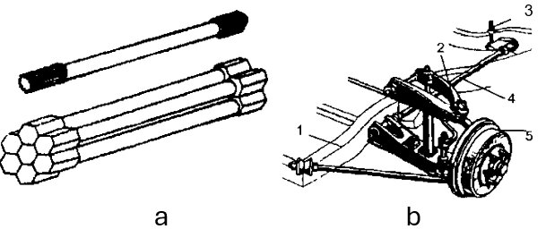
Hình 11.22. Bộ phận đàn hồi dạng thanh xoắn
a- Các dạng thanh xoắn: đơn và ghép; b- Bố trí thanh xoắn
1- Khung xe; 2- Đòn ngang HTT; 3- Ốc điều chỉnh chiều cao thân xe; 4- Thanh xoắn; 5- Cơ cấu phanh bánh xe
Các bộ phận đàn hồi bằng kim loại có đặc tính biến dạng được coi là tuyến tính.
c. Loại nhíp
Được dùng nhiều trên hệ thống treo xe tải loại nhỏ và trung bình. Nhíp lá có cấu tạo đơn giản, dễ chế tạo, dễ lắp ráp, giá thành rẻ, thích hợp cho các loại xe có giá thành rẻ và đòi hỏi độ êm dịu không cao. Ví dụ: KamAZ 55111, Hyundai Mighty EX8, xe buýt Hyundai Aero Town.
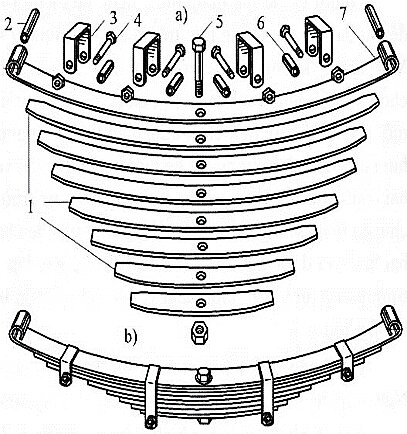
Hình 11.23. Cấu tạo nhíp lá
a) Các chi tiết; b) Bó nhíp đã lắp ghép.
1. Lá nhíp; 2. Chốt nhíp; 3. Nẹp giữ; 4. Bu lông nẹp giữ; 5. Bu lông trung tâm; 6. Bạc của bu lông nẹp giữ; 7. Lá nhíp cái.
Hình 11.23 thể hiện một bó nhíp lá được dùng trên hệ thống treo ô tô. Hình 11.23b là bó nhíp đã lắp ghép hoàn chỉnh. Hình 11.23a là các chi tiết của bó nhíp. Bó nhíp trên hình 11.23 có 8 lá nhíp là những thanh kim loại cong, đàn hồi có tiết diện chữ nhật và có chiều dài khác nhau, bao gồm lá nhíp cái 7 và 7 lá khác.
Lá nhíp cái có chiều dài lớn nhất, các lá còn lại (1) có chiều dài nhỏ dần, lá cuối cùng có chiều dài nhỏ nhất. Các lá nhíp có chiều rộng giống nhau. Về chiều dày có thể có 1
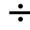
3 nhóm (hay gặp là 1 hoặc 2 nhóm). Nếu chỉ có một nhóm thì chiều dày tất cả các lá giống nhau. Nếu có 2 nhóm thì sẽ là nhóm lá nhíp cái (có chiều dài lớn nhất, còn gọi là nhíp chính) và nhóm lá còn lại. Nhóm nhíp cái có thể có 1, 2 hoặc 3 lá. Nếu 1 lá thì chiều dày lá nhíp cái lớn hơn chiều dày các lá còn lại. Ví dụ lá nhíp cái có chiều dày là 9 mm các lá còn lại 8 mm. Nếu nhóm nhíp cái có từ 2 lá trở lên thì chiều dày của các lá nhíp cái giống nhau và nhỏ hơn chiều dày các lá còn lại. Ví dụ hai lá nhíp cái mỗi lá dày 8 mm, các lá nhóm còn lại 9 mm.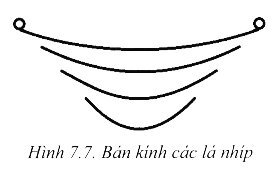
Hình 11.24. Bán kính các lá nhíp
Thông thường nếu chưa lắp ghép, bán kính cong của các lá nhíp không bằng nhau: các lá nhíp cái có bán kính cong lớn nhất, các lá còn lại có bán kính nhỏ dần (hình 11.24).
Với cách bố trí như vậy khi ghép lại với nhau các lá nhíp ôm khít vào nhau. Mặt khác các lá nhíp phía trên sẽ chịu ứng suất lắp ghép ngược với ứng suất khi chịu tải (trọng lượng xe) và vì vậy ứng suất sẽ giảm. Tuy vậy tác dụng này không nhiều.
Nhóm lá nhíp cái đảm nhận nhiệm vụ lắp ghép với khung xe. Trên hình 7.6 hai đầu lá nhíp cái 7 được cuốn lại thành một bản lề trụ và sẽ được lắp vào khung xe qua chốt nhíp 2.
Bu lông trung tâm 6 (hình 11.23) có nhiệm vụ ghép chặt các lá nhíp vào nhau.
Để các lá nhíp không bị xô lệch, các lá nhíp sẽ được nẹp lại bằng nẹp 3, bu lông 4 và bạc 5.
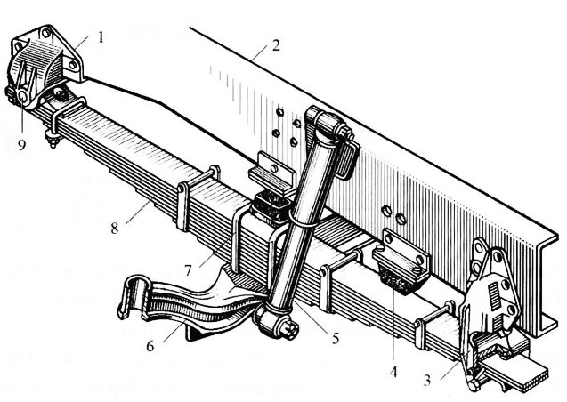
Hình 11.25. Lắp nhíp trên xe
1- Giá phía cố định; 2- Khung xe; 3- Giá phía di động; 4- Ụ cao su; 5- Giảm chấn; 6- Cầu xe; 7- Bu lông qung nhíp; 8- Bó nhíp; 9- Chốt nhíp
Nhíp là phần tử liên kết khung xe với cầu xe (hoặc bánh xe). Trong đa số các trường hợp, nhíp vừa làm nhiệm vụ đàn hồi vừa làm nhiệm vụ bộ phận dẫn hướng. Bộ phận dẫn hướng có nhiệm vụ truyền lực dọc, lực ngang và mô men giữa bánh xe và thân xe đồng thời đảm bảo quan hệ động học giữa bánh xe và khung xe. Các nhiệm vụ này sẽ quyết định cách mắc nhíp vào khung. Có nghĩa là nhíp được mắc vào khung sao cho có thể truyền được lực dọc, lực ngang và mô men từ bánh xe lên thân xe và ngược lại, đồng thời phải đảm bảo khi bánh xe dao động chỉ có thể dao động trong mặt phẳng thẳng đứng của thân xe.
Hình 11.25 thể hiện cách lắp ghép nhíp vào khung xe và cầu xe. Bó nhíp 8 nối đàn hồi khung 2 với cầu xe 6. Mặt khác các lực dọc, lực ngang và mô men phải được truyền giữa cầu xe 6 và khung xe 2, đồng thời cầu xe 6 chỉ dịch chuyển tương đối với khung xe 2 trong mặt phẳng thẳng đứng.
Cầu xe 6 được bắt chặt với bó nhíp 8 bằng 2 bu lông quang nhíp 7. Phía trái (là phía cố định) bó nhíp bắt với khung xe bằng khớp bản lề trụ với chốt nhíp 9 tại giá 1. Bó nhíp 8 có thể quay quanh chốt nhíp 9 trong mặt phẳng thẳng đứng. Phía phải (là phía di trượt), bó nhíp tựa lên giá 3. Các giá 1 và 3 được tán vào khung xe 2.
Hình 11.26 thể hiện một số trường hợp lắp ghép nhíp lên khung xe. Trên hình 11.26a nhíp được lắp lên khung xe bằng các gối đỡ cao su 1 và 2. Gối cao su 3 là để nhíp có thể thay đôi chiều dài khi thay đổi bán kính cong.
Hình 11.26b mô tả gối đỡ di động của nhíp. Đầu trái của nhíp được lắp bản lề trụ tương tự như đầu trái nhíp ở hình 11.25. Đầu phải của nhíp được lắp vào khung xe qua quang treo 2. Giá treo 1 được tán chặt vào khung. Một đầu của quang treo 2 được lắp vào giá 1 bằng chốt 3 và đầu còn lại của quang treo lắp vào đầu phải của nhíp bằng chốt 4. Khi nhíp thay đổi chiều dài thì quang treo 2 sẽ quay.
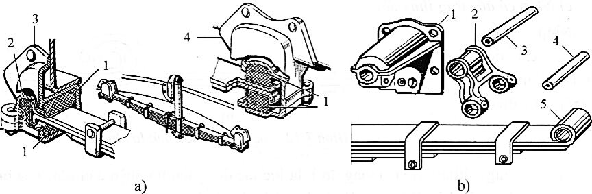
Hình 11.26. Lắp nhíp vào khung xe
a)- Dùng gối đỡ cao su: 1- Miếng đỡ trên và dưới; 2- Miếng chặn; 3- Giá đỡ trước;
b)- Gối đỡ di động dùng quang treo: 4- Giá đỡ sau; 1- Giá đỡ; 2- Quang treo; 3- Chốt quang treo; 4- Chốt nhíp; 5- Phần đầu lá nhíp cái (được cuộn tròn để lắp chốt nhíp).
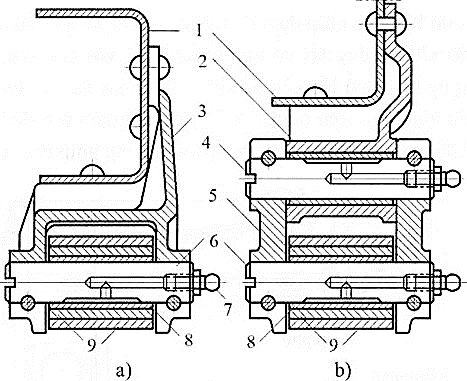
Hình 11.27. Lắp nhíp vào khung xe
1- Khung xe; 2- Giá đỡ phía di động; 3- Giá đỡ phía cố định; 4- Chốt quang treo; 5- Quang treo; 6- Chốt nhíp; 7- Vú mỡ; 8- Bạc chốt nhíp; 9- Các lá nhíp cái.
Hình 11.27 thể hiện bản vẽ mặt cắt vị trí lắp ghép hai đầu nhíp: một đầu cố định, một đầu di động. Hình 11.27.a là đầu cố định và hình 11.27.b là đầu di động. Các lá nhíp 9 được cuốn lại thành hình trụ và được lắp bạc kim loại 8. Để bôi trơn người ta thiết kế các vú mỡ 7 lắp vào các chốt nhíp 6. Khi bơm, mỡ sẽ theo đường dẫn được khoan trong chốt nhíp đến bôi trơn chỗ tiếp xúc giữa bạc 8 và chốt nhíp 6. Cũng giống như các trường hợp trên, các giá đỡ 2 và 3 được tán vào khung 1. Ở đầu di động có quang treo 5 có một đầu lắp với giá 2 bằng chốt 4 và đầu còn lại lắp với nhíp bằng các chốt nhíp 6.
Hình 11.28 thể hiện cách tạo ra kết cấu để bắt chốt nhíp ở đầu mút lá nhíp. Hình 11.28a chỉ có một lá nhíp được cuốn lại và được lắp bạc chốt nhíp vào. Hình 11.28b có thêm một lá được cuốn vào nhưng chỉ cuốn một phần, còn ở hình 11.28c thì lá thứ 2 được cuốn hết nhưng không cuốn sát vào mà có khoảng trống như hình vẽ.
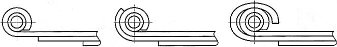
a) b) c)
Hình 11.28. Các kết cấu đầu mút lá nhíp
Nhíp có độ cứng thay đổi
Nhíp cũng như các chi tiết đàn hồi kim loại có một đặc điểm chung là có đường đặc tính đàn hồi tuyến tính (đường 1 hình 11.29). Trong đó F là lực tác dụng lên bộ phận đàn hồi,  là biến dạng của bộ phận đàn hồi. Độ cứng C của bộ phận đàn hồi được tính theo biểu thức:
là biến dạng của bộ phận đàn hồi. Độ cứng C của bộ phận đàn hồi được tính theo biểu thức:
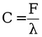
(11.2)Như vậy, nhíp và các chi tiết đàn hồi kim loại có độ cứng không đổi. Đối với những xe có tải trọng thay đổi thì nếu độ cứng và độ bền của nhíp đảm bảo yêu cầu khi xe chịu tải trọng nhỏ sẽ không đảm bảo khi xe đầy tải và ngược lại. Đối với cầu sau xe tải, trọng lượng phân bố lên cầu sau khi không tải và đầy tải chênh lệch nhau khoảng 2,5 lần, cho nên nhíp như trên hình 11.25 rất khó đảm bảo độ êm dịu và độ bền theo yêu cầu. Trên ô tô để giải quyết vấn đề này người ta dùng nhíp thay đổi được độ cứng.
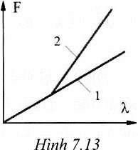
Hình 11.29. Đường đặc tính đàn hồi
Loại nhíp hay được dùng ở cầu sau xe tải thể hiện trên hình 11.30, được gọi là nhíp kép. Hệ thống treo được bố trí 2 bó nhíp: một bó nhíp chính và một bó nhíp phụ. Bó nhíp chính được lắp vào khung xe như nhíp đơn. Nhíp phụ và nhíp chính được bắt chặt vào cầu xe bằng quang nhíp. Khi không tải và non tải chỉ có nhíp chính làm việc. Khi tải trọng lên cầu đạt được một giá trị nhất định thì nhíp phụ sẽ tựa vào giá tựa trên khung xe. Khi cả hai nhíp cùng làm việc độ cứng của bộ phận đàn hồi tăng lên (đường 2 trên hình 11.29).
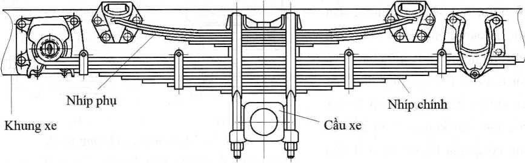
Hình 11.30. Nhíp kép
Ngoài ra, còn có nhiều kết cấu nhíp thay đổi được độ cứng. Hình 11.31 thể hiện hai sơ đồ kết cấu nhíp thay đổi được độ cứng, ở sơ đồ hình 11.31a một đầu nhíp được bắt bản lề với khung xe tại gối 1, đầu còn lại tựa vào hai gối 2 và 3. Khi non tải tựa vào gối 3 và khi tải trọng đạt đến một giá trị theo tính toán nhíp sẽ tựa vào gối 2. Do chiều dài nhíp thay đổi khi thay đổi điểm tựa nên độ cứng nhíp cũng thay đổi theo. Ở sơ đồ hình 11.31b nhíp được chia làm 2 nhóm: nhóm 1 gồm lá 1 và 2 và nhóm 2 gồm lá 3 và 4. Do bán kính cong của hai nhóm không bằng nhau nên khi tải trọng nhỏ chỉ có nhóm 1 làm việc, khi tải trọng đạt đến một giá trị theo tính toán cả hai nhóm cùng làm việc do đó sẽ làm tăng độ cứng của nhíp.
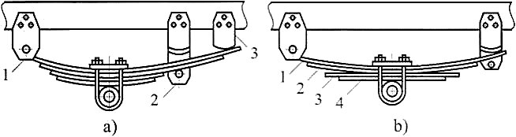
Hình 11.31. Nhíp thay đổi độ cứng
a)- Thay đổi chiều dài hiệu dụng của nhíp: 1- Giá đỡ phía cố định; 2, 3- Giá đỡ phía di động;
b)- Thay đổi số lá làm việc: 1, 2- Nhóm lá thứ nhất; 3, 4- Nhóm lá thứ 2.